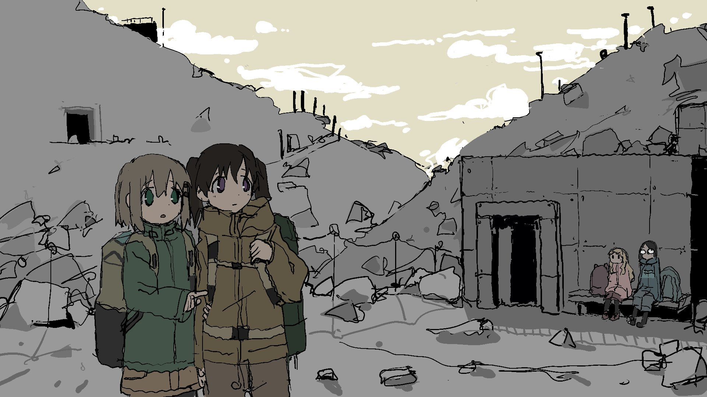
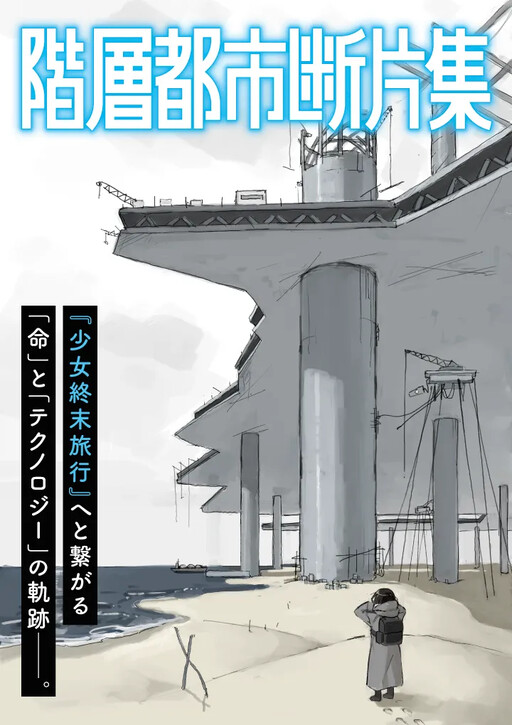

of the Layered City (階層都市断片集 Kaisou Toshi Danpenshuu) is a Slice of Life manga written and illustrated by Tsukumizu Yuu. It serves as a chronological prequel to Girls' Last Tour, with the story chronicling life during the inception of the Megacity across different eras in time prior to the catastrophic robot war.
The story focuses on life within the megacity before the robot war that catastrophically wiped out all of the original civilisation that led up to the events of Girls' Last Tour. It asks the question: What was daily life in megacity before Chito and Yuuri during its inception up to its destruction that led to its post-apocalyptic state in the present?